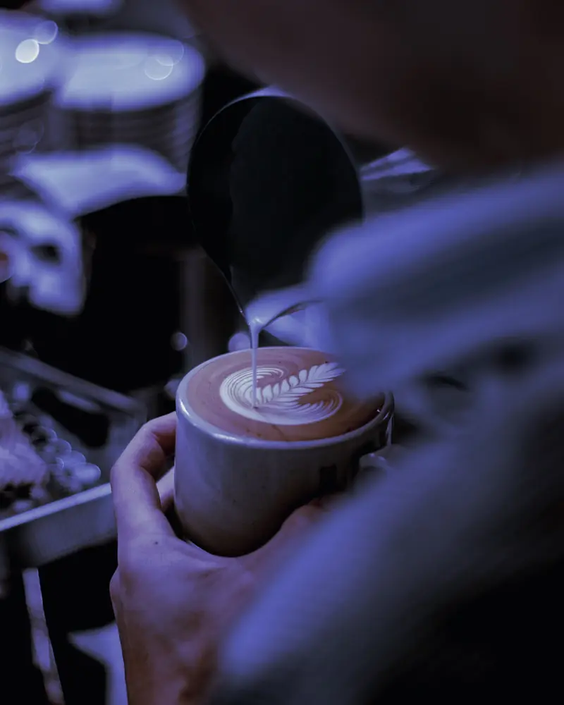
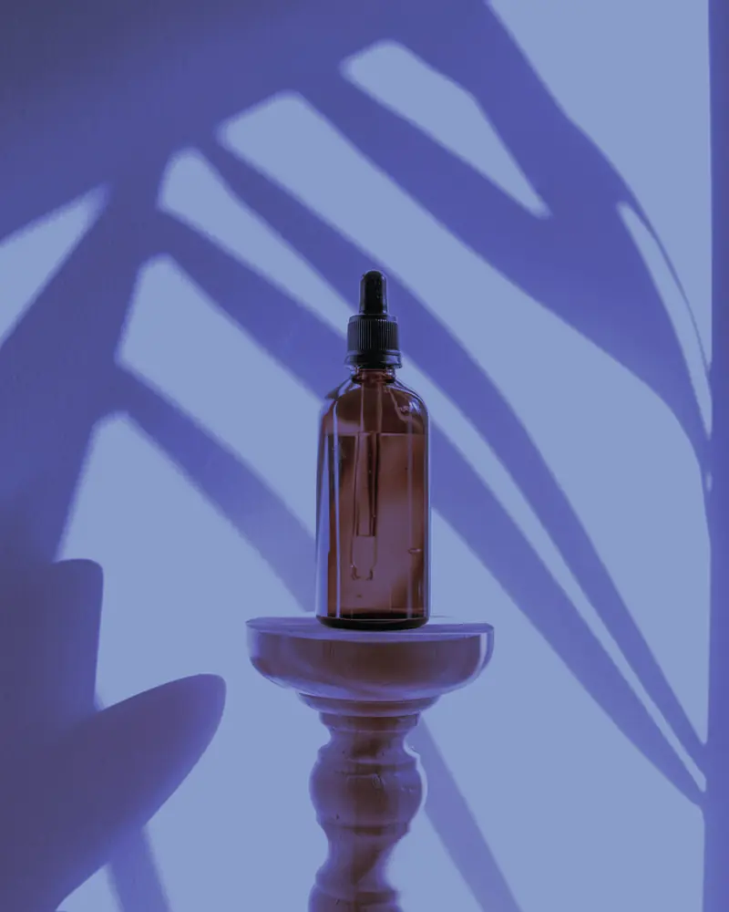
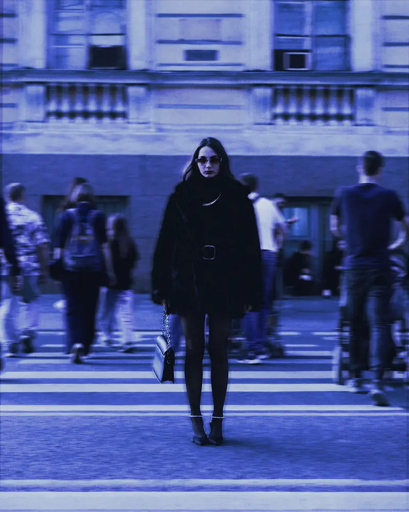
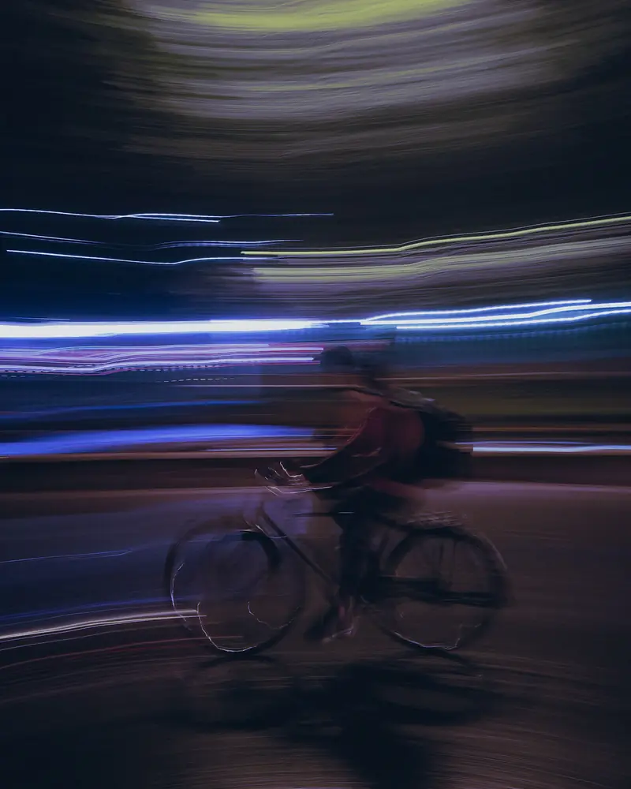
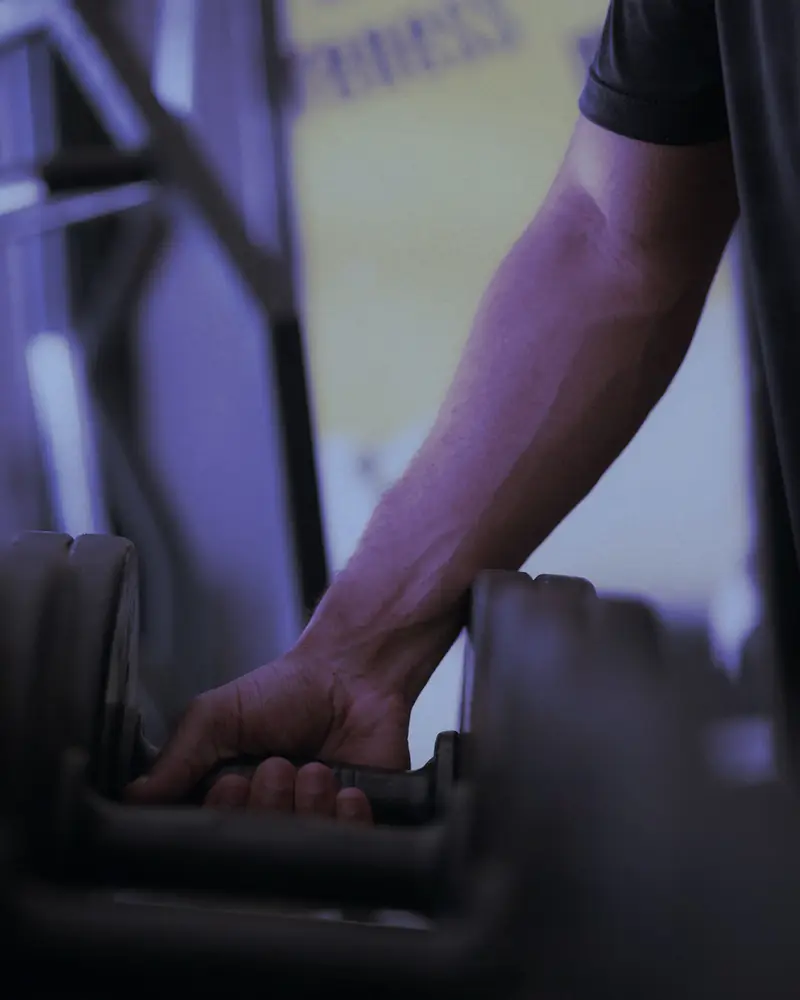

Konzepte, die zeigen, wie wir denken
Wir sind neu. Deshalb zeigen wir keine erfundenen Kunden, sondern Konzepte für fiktive Marken: mit Idee, Formaten und den Zielen, an denen wir uns messen würden.
-

Nordlicht Café
„Morgens um 7“ · Eine Reel-Serie über den ersten Kaffee des Tages. -

Velura Skin
„Ehrliche Haut“ · 30 Tage echte Routinen, ohne Filter. -

Atelier Mira
„Ein Stück, fünf Looks“ · Ein Teil, fünf Stylings, ein klarer Stil. -

Kanto Bikes
„Der Weg zur Arbeit“ · Pendelstrecken bei Nacht und Morgengrauen. -

Studio Wellenform
„Woche 9“ · Geschichten von Mitgliedern, die drangeblieben sind.
So etwas für Ihre Marke?
Erzählen Sie uns, wo Sie stehen. Wir denken gern mit.
Gespräch anfragen